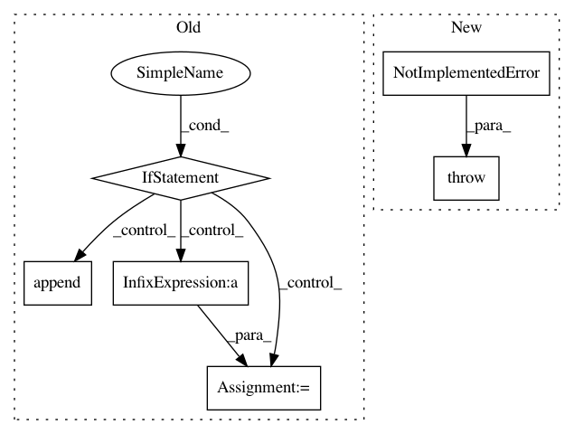

ca2a7e1ca16ce1d2341dd09d7d358d21c1d88f95,python/dgl/contrib/sampling/sampler.py,SampledSubgraphLoader,_prefetch,#SampledSubgraphLoader#,53
Before Change
for i in range(self._num_workers):
start = self._nflow_idx * self._batch_size
// if we have visited all nodes, don"t do anything.
if start >= num_nodes:
break
end = min((self._nflow_idx + 1) * self._batch_size, num_nodes)
seed_ids.append(utils.toindex(self._seed_nodes[start:end]))
self._nflow_idx += 1
if self._sampler == "neighbor":
sgi = self._g._graph.neighbor_sampling(seed_ids, self._expand_factor,
self._num_hops, self._neighbor_type,
After Change
self._layer_sizes.todgltensor(),
self._neighbor_type))
else:
raise NotImplementedError("Invalid sampler option: "%s"" % self._sampler)
nflows = [NodeFlow(self._g, hdl) for hdl in handles]
self._nflows.extend(nflows)
self._nflow_idx += len(nflows)
In pattern: SUPERPATTERN
Frequency: 3
Non-data size: 6
Instances
Project Name: dmlc/dgl
Commit Name: ca2a7e1ca16ce1d2341dd09d7d358d21c1d88f95
Time: 2019-03-05
Author: minjie.wang@nyu.edu
File Name: python/dgl/contrib/sampling/sampler.py
Class Name: SampledSubgraphLoader
Method Name: _prefetch
Project Name: snorkel-team/snorkel
Commit Name: b56a4b355dfc302fa449d223e065af3a7acac986
Time: 2018-05-03
Author: dnicholson329@gmail.com
File Name: snorkel/learning/pytorch/noise_aware_model.py
Class Name: TorchNoiseAwareModel
Method Name: marginals
Project Name: snorkel-team/snorkel
Commit Name: 660f6e5185dbd68267916ff093c81500614d7318
Time: 2016-07-29
Author: ajratner@gmail.com
File Name: snorkel/features.py
Class Name: NgramFeaturizer
Method Name: _match_contexts